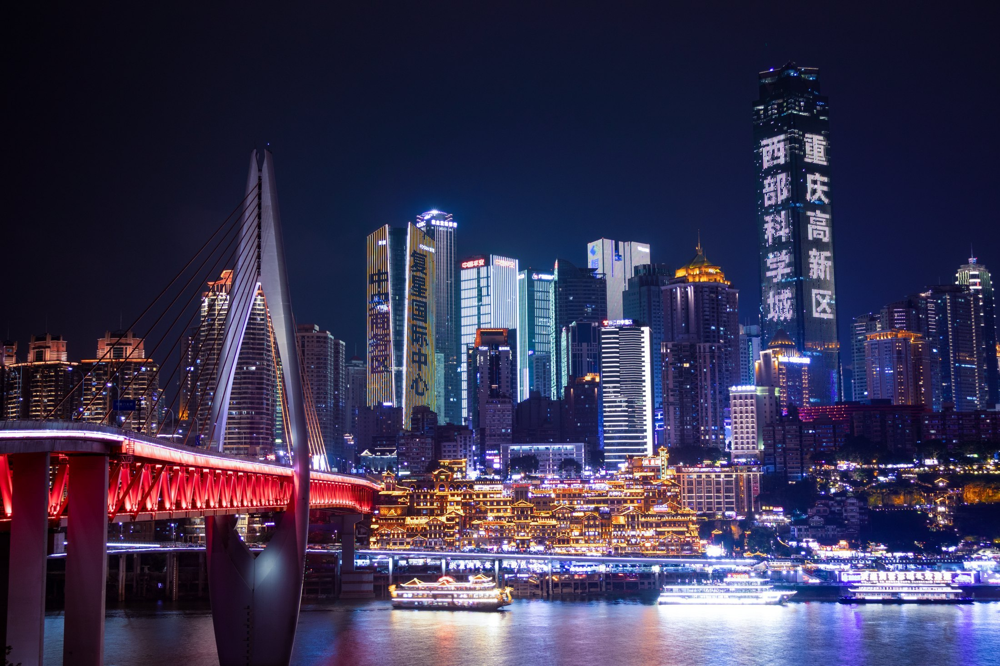
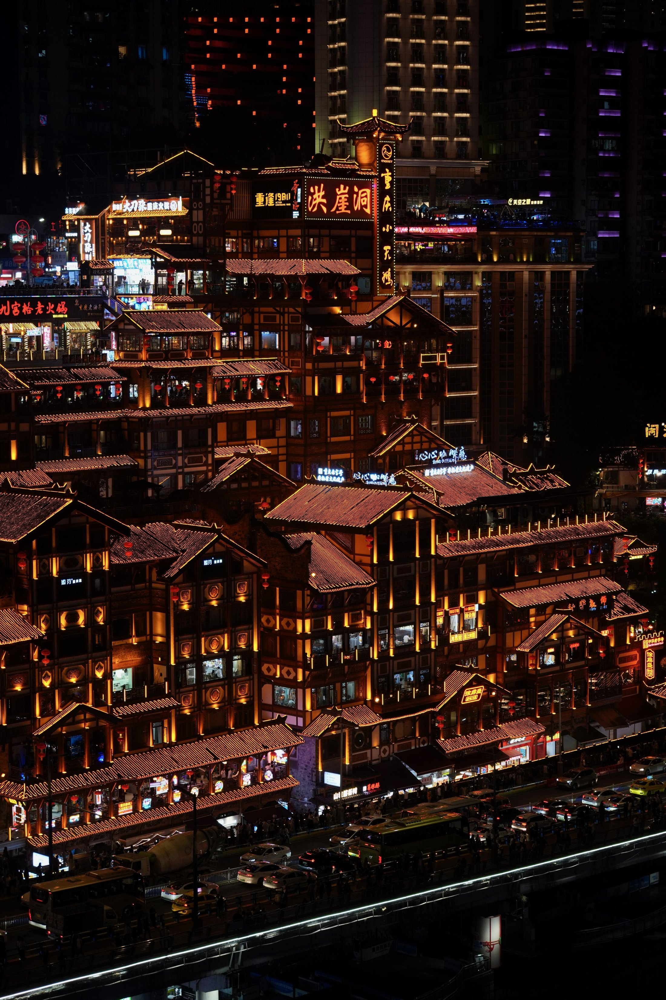
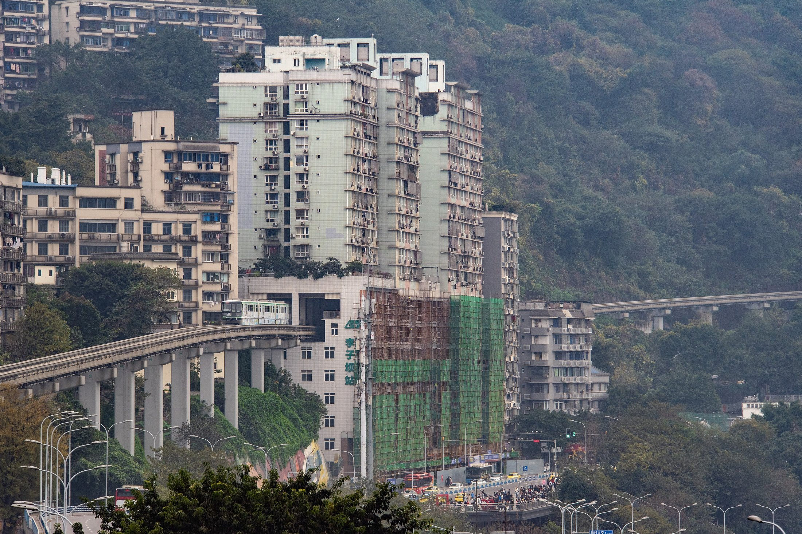
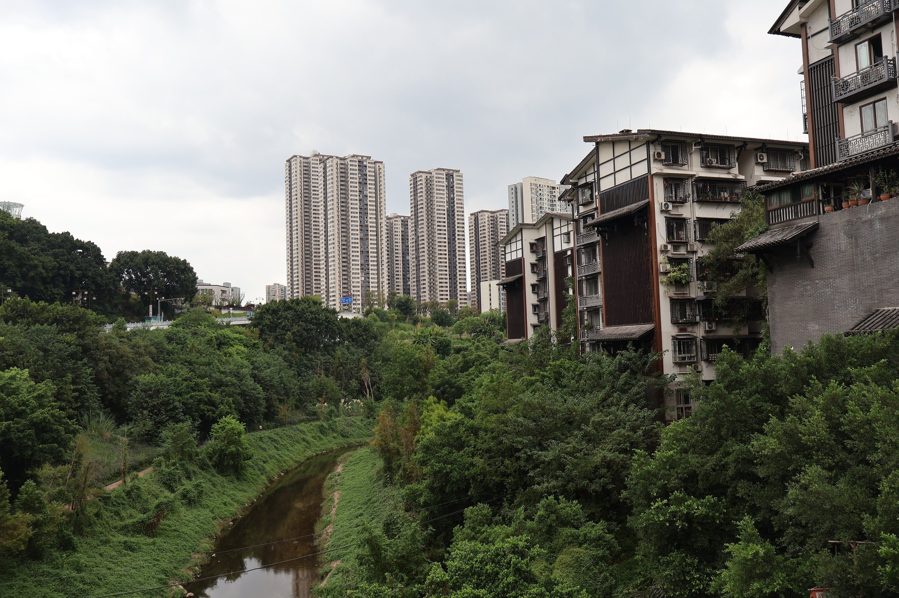
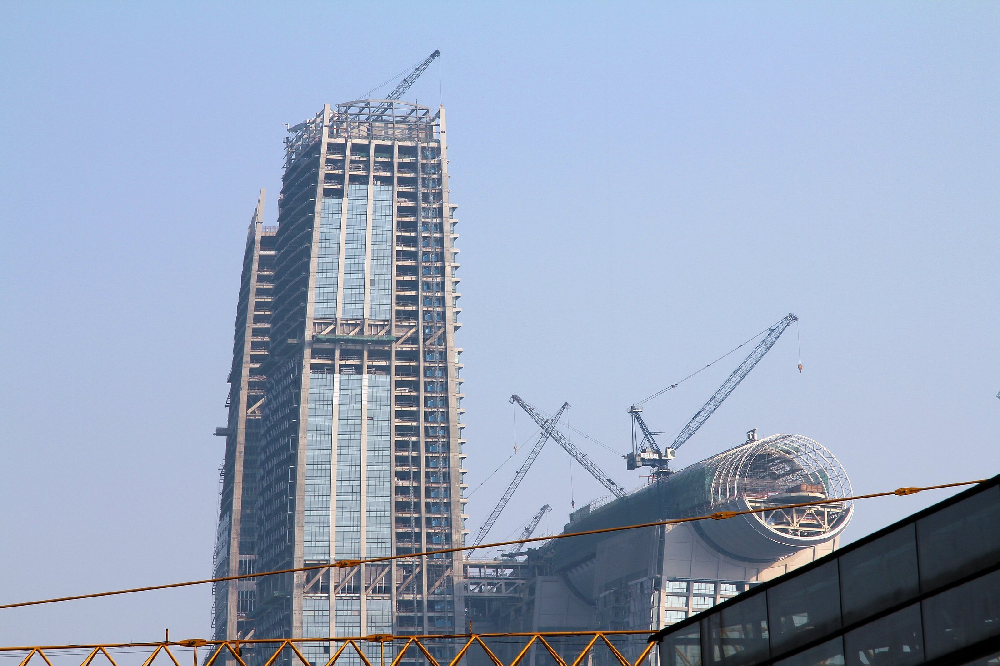
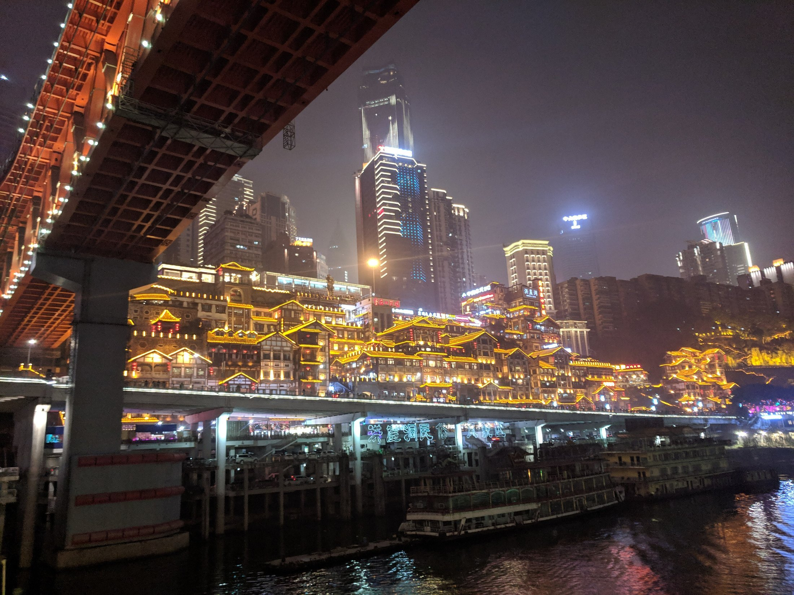
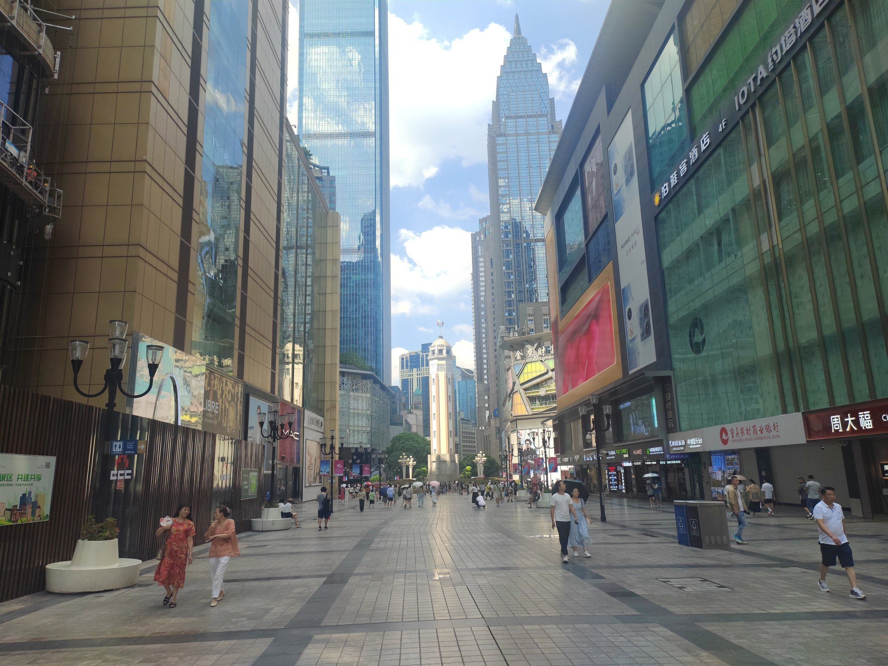

Winter Escape
Chongqingstan
2026 — 2027
26 ธันวาคม 2569 – 2 มกราคม 2570 · 8 วัน 7 คืน · ผู้เดินทาง 7 คน
เมืองที่ไม่มีพื้นราบ! — 8 วัน 7 คืน ฉงชิ่งกับอู่หลง












ฉงชิ่งสร้างบนภูเขาคร่อมแม่น้ำสองสาย พื้นเมืองต่างระดับกันได้ถึง 70 เมตร จนมีรถไฟฟ้าวิ่งทะลุตึก บันไดเลื่อนกลางแจ้งยาว 112 เมตร และสถานีใต้ดินที่ลึกที่สุดในโลก
คนไทยเข้าจีนได้โดยไม่ต้องขอวีซ่า อยู่ได้ 30 วัน ภายใต้ข้อตกลงไทย-จีนที่มีผลถาวรตั้งแต่ 1 มีนาคม 2567 แค่พาสปอร์ตอย่างเดียว
12 จาก 13 จุดในเมืองอยู่ในคาบสมุทรเดียวกัน ขาต่างจังหวัดใช้รถไฟความเร็วสูง 34 นาที เหมารถจริง ๆ แค่วันเดียว ตัดปัญหา 7 คนกับกระเป๋า 7 ใบไปได้เกือบหมด

ลงเครื่องตอนสาย ได้เวลาเต็มเกือบทั้งวัน ไล่ย่านเจี่ยฟ่างเปยทีละชั้น จบที่หงหยาต้งตอนไฟเปิดหกโมงเย็น แล้วข้ามสะพานไปถ่ายจากอีกฝั่ง
เมืองท่าเก่าฉือชี่โข่วริมแม่น้ำเจียหลิง บ่ายข้ามแม่น้ำไปย่านกราฟฟิตี้ที่ตึกทั้งแถบยาวเกินกิโลเมตรถูกพ่นสีเต็มผนัง
รถไฟฟ้าวิ่งทะลุกลางตึก 19 ชั้น บันไดเลื่อนกลางแจ้งยาว 112 เมตร สถานีใต้ดินที่ลึกที่สุดในโลก 116 เมตร และกระเช้าข้ามแม่น้ำแยงซี
รถไฟความเร็วสูงสายใหม่ 34 นาทีถึงอู่หลง แล้วลงลิฟต์แก้วริมผา 80 เมตรไปเดินใต้สะพานหินธรรมชาติสามแห่งที่เป็นมรดกโลก
ภูเขานางฟ้าที่ความสูงเกือบ 1,900 เมตร มีลานสกีกลางแจ้งใหญ่ที่สุดในจีนตะวันตกเฉียงใต้ และทุ่งหญ้าที่หน้าหนาวกลายเป็นทุ่งหิมะทั้งผืน
ลงจากเขาตอนเช้า บ่ายขึ้นสะพานกระจกสูง 250 เมตรมองจุดบรรจบแม่น้ำสองสาย แล้วนับถอยหลังเข้าปีใหม่ที่ลานเจี่ยฟ่างเปย
วันปีใหม่คนในเมืองล้น เราออกนอกเมืองไปต้าจู๋ มรดกโลกที่คนแกะพระลงหน้าผาต่อเนื่องกว่า 500 เมตรตั้งแต่ศตวรรษที่ 12

เช้าสุดท้ายเดินเก็บของฝากแถวเจี่ยฟ่างเปย กลับไปยืนที่สะพานเชียนซือเหมินอีกรอบ ก่อนขึ้นรถไปสนามบิน
สมัครด้วยเบอร์ไทยได้ ไม่ต้องมีเบอร์จีน แต่ต้องยืนยันตัวตนด้วยพาสปอร์ตถึงจะได้วงเงินเต็ม · ผูกบัตร 2 เครือข่ายต่างกันเผื่อใบหนึ่งไม่ผ่าน · รายการไม่เกิน ¥200 ไม่มีค่าธรรมเนียม เกินนั้นคิดราว 3% · ตู้ขายตั๋วกระเช้าแยงซีไม่รับบัตรเครดิตต่างชาติเลย ไม่มีสองแอปนี้คือขึ้นไม่ได้
ระบบเปิดขายล่วงหน้า 15 วันพอดี ขาไป 29 ธ.ค. เปิดจอง 14 ธ.ค. · ช่วงปีใหม่หมดเร็ว จองวันเปิดขาย · จองผ่าน Trip.com ด้วยพาสปอร์ตได้เลย ไม่ต้องสมัคร 12306 · ตั๋วไร้กระดาษ สแกนพาสปอร์ตที่ประตูสีส้ม · ออกจากสถานี Chongqing East ไม่ใช่ Chongqing North เช็กชื่อบนตั๋วให้ชัด
สูตรที่ใช้ได้จริงคือ eSIM ต่างประเทศ + เปิดโรมมิ่งซิมไทยควบคู่ — eSIM วิ่งผ่านเครือข่ายนอก ไม่ติดไฟร์วอลล์ ส่วนซิมไทยไว้รับ SMS OTP ของแอปจีน · แผนที่ใช้ AMap (高德地图) มีภาษาอังกฤษ หรือ Apple Maps บน iPhone ใช้ได้ในจีนโดยไม่ต้อง VPN · Google Maps กับ LINE ถูกบล็อก
26 ธ.ค. ตรงวันเสาร์ หงหยาต้งเสาร์-อาทิตย์ต้องจองชื่อจริงล่วงหน้า (ฟรี) ผ่าน WeChat · 1–3 ม.ค. เป็นวันหยุดยาว 3 วันของจีน จุดฮิตในเมืองคนล้น ที่พักแพงขึ้น แผนนี้จึงจัดวันที่ 7 ไว้นอกเมือง
ต้องใช้ van 9–15 ที่นั่ง หรือ Coaster ไม่ใช่ MPV 7 ที่นั่ง เพราะ 7 ที่นั่งคือรวมคนขับ นั่งจริง 6 คน และท้ายรถใส่กระเป๋าใหญ่ได้แค่ 3–4 ใบ · เรทที่พบ ¥840–1,500 ต่อวัน (8 ชม./100 กม.) เกินคิด ¥5 ต่อ กม. · ขอใบเสนอราคาที่ระบุครบ 5 อย่าง: น้ำมัน ทางด่วน ที่จอด อาหารคนขับ ที่พักคนขับ
| วัน | วันที่ | ย้ายไปไหน | ต้องทำอะไร |
|---|---|---|---|
| วันที่ 1 | 26 ธ.ค. | เข้าที่พักฉงชิ่ง | เช็กอิน 3 คืนแรก |
| วันที่ 4 | 29 ธ.ค. | ฉงชิ่ง → เซียนหนี่ว์ซาน | ย้ายครั้งที่ 1 — ฝากกระเป๋าใหญ่ 7 ใบไว้ที่โรงแรมฉงชิ่ง ขนขึ้นเขาเฉพาะของใช้ 2 คืน |
| วันที่ 6 | 31 ธ.ค. | เซียนหนี่ว์ซาน → ฉงชิ่ง | ย้ายครั้งที่ 2 — กลับเข้าโรงแรมเดิม รับกระเป๋าใหญ่คืน |
| วันที่ 8 | 2 ม.ค. | เช็กเอาต์ | ฝากกระเป๋าที่ล็อบบี้ได้จนถึงเย็น |
ย้ายที่พัก แค่ 2 ครั้ง ตลอด 8 วัน — ฉงชิ่ง 5 คืน (26–28 ธ.ค. และ 31 ธ.ค.–1 ม.ค.) และเซียนหนี่ว์ซาน 2 คืน (29–30 ธ.ค.) · จองโรงแรมฉงชิ่งรวดเดียว 5 คืน ไม่ต้องแยกจอง จะได้ฝากกระเป๋าตอนขึ้นเขาและไม่เสี่ยงโดนคนอื่นจองช่วงกลาง
| ช่วง | ระยะทาง | เวลา | เดินทางโดย | วัน |
|---|---|---|---|---|
| กรุงเทพฯ (DMK) → ฉงชิ่ง (CKG) | ~2,000 กม. | 4 ชม. 10 น. | เครื่องบินตรง | วันที่ 1 |
| สนามบิน CKG → ย่านเจี่ยฟ่างเปย | 24.5 กม. | 40 น. | มินิแวน 9 ที่นั่ง | วันที่ 1 |
| เจี่ยฟ่างเปย → ฉือชี่โข่ว | 11 กม. | 35 น. | รถไฟฟ้าสาย 1 | วันที่ 2 |
| ฉือชี่โข่ว → หวงเจวี๋ยผิง (ข้ามแม่น้ำ) | 9 กม. | 45 น. | รถไฟฟ้า เปลี่ยน 1 ต่อ | วันที่ 2 |
| ข้ามแม่น้ำแยงซีด้วยกระเช้า | 1.2 กม. | 5 น. | กระเช้าลอยฟ้า | วันที่ 3 |
| เจี่ยฟ่างเปย → สถานี Chongqing East | 21 กม. | 50 น. | Metro สาย 6 | วันที่ 4 |
| Chongqing East → Wulong South | ~110 กม. | 34 น. | รถไฟความเร็วสูง Yuxia | วันที่ 4 |
| Wulong South → เมืองเซียนหนี่ว์ซาน | 14 กม. | 50 น. | รถสายเฉพาะขึ้นเขา | วันที่ 4 |
| เซียนหนี่ว์ซาน → ภูเขานางฟ้า (ไป-กลับ) | 7 กม. ต่อเที่ยว | 25 น. ต่อเที่ยว | รถขึ้นเขา | วันที่ 5 |
| เซียนหนี่ว์ซาน → ฉงชิ่ง | ~124 กม. | 1 ชม. 25 น. | รถลงเขา + รถไฟความเร็วสูง | วันที่ 6 |
| ฉงชิ่ง → ต้าจู๋ (ไป-กลับ) | ~130 กม. ต่อเที่ยว | 2 ชม. 30 น. ต่อเที่ยว | เหมารถ van | วันที่ 7 |
| ที่พัก → สนามบิน CKG | 24.5 กม. | 40 น. | มินิแวน 9 ที่นั่ง | วันที่ 8 |
| ฉงชิ่ง (CKG) → กรุงเทพฯ (BKK) | ~2,000 กม. | 3 ชม. 15 น. | เครื่องบินตรง | วันที่ 8 |
จุดแข็งของทริปนี้คือ 12 จาก 13 จุดในเมืองอยู่ในคาบสมุทร Yuzhong เดียวกัน เดินกับรถไฟฟ้าถึงหมด มีแค่หวงเจวี๋ยผิงที่ต้องข้ามแม่น้ำ · ขาต่างจังหวัดใช้รถไฟความเร็วสูง 34 นาทีถึงอู่หลง แทนขับ 3 ชั่วโมง · เหมารถจริง ๆ แค่ วันที่ 7 วันเดียว บวกรับส่งสนามบิน